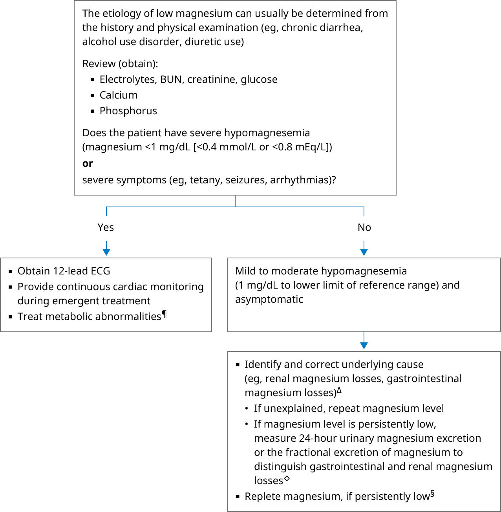

BUN: blood urea nitrogen; ECG: electrocardiogram.
* The normal range for serum magnesium is approximately 1.6 to 2.6 mg/dL (0.7 to 1.1 mmol/L or 1.4 to 2.2 mEq/L). Interpretation of a specific abnormal test result should be based upon the reference range reported with that result.
¶ Symptomatic magnesium depletion is often associated with multiple biochemical abnormalities (eg, hypokalemia, hypocalcemia, and metabolic alkalosis), which may contribute to clinical findings.
Δ Refer to additional UpToDate graphic on the causes of magnesium depletion.
◊ Perform collection at a time when the patient is not receiving magnesium supplementation.
§ In an asymptomatic patient with mild to moderate hypomagnesemia and risk factors for cardiac arrhythmias (eg, history of myocardial ischemia, postcardiac surgery), intravenous repletion is typically administered to avoid arrhythmias.